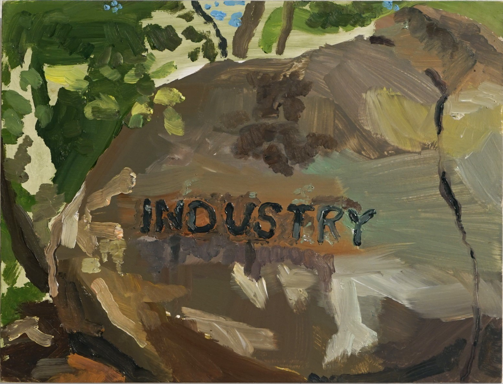

Eli
Neuman-
Hammond
2022
- "One hearing or a century of hearings?"
- colonial landscape, maypole, New England, fieldstones, Ives
2021
- Concrete Music
- writing, dance, public space
- The Castle
- tracing, memory, architecture, reality therapy
- Carnival's Quarrel with Lent
- slide whistle, jongleur, the city, Bruegel, filtration
2020
- Description
- language & speech, imagination, utopic thought
- Playing Music
- composed audio, improvisation, drawing
- Road Sounds
- folk music, "sonic ethnography," acoustic synthesis, New England
- Inaudible Sounds
- literature, representation, sound or langauge?
- Field Recordings
- writing, transduction
- Pool Hall Canon
- American music, games, felt
- Sanded Recording of a Decade
- work, art object, Arendt, slow composition
2019
- 16 Recordings of Ephemeral Percussion Ensembles
- weather, sound-music, field recording, improvisation, spring
